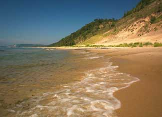

Sylvia Bates has more than 20 years of experience in the field of land conservation. Read this interview to learn all about conservation easements from a professional. For more, see Protect Your Land for Future Generations.
How would you explain a conservation easement to someone without prior knowledge of them?
A conservation easement is a voluntary legal agreement between a landowner and a conservation organization or public agency. Its primary purpose is to protect the land from inappropriate development, and this agreement restricts the amount and type of development that can occur on a piece of land. It protects a property’s value as agricultural land, a scenic view, an open space, a river corridor, a park, etc. These conservation values are permanently protected from any development that will have a negative impact on them. The agreement is perpetual, meaning it lasts forever and runs with the land. It binds all future owners of the land as well as the existing landowner. So the current landowner is bound by the terms of the easement, ensuring that the property never becomes developed, and any future owners of the property also are bound by those same restrictions.
What’s the relationship between a landowner, easement and land trust?
Interactions between a landowner and a land trust can happen in many different ways, often depending on how that relationship first came about. Some landowners are very generous and are able to make donations of conservation easements. Sometimes they will actually approach a land trust for this purpose because they think this is an important thing to do. They have a conservation commitment, a conservation ethic, and really want to see their land permanently protected from any future development. So they may already have established an earlier relationship with the land trust - perhaps they’re a land trust member already, or maybe they’re just a member of the community that’s already heard about the good work that the land trust does, or somehow are introduced to the organization in some other way. In other situations, a land trust may initiate contact with a landowner for those properties that the land trust has previously identified as being very important in its community or region to protect. So the land trust may approach the landowner to discuss options for protecting their land.
Which scenario is more common?
Both, actually. Land trusts are both proactive in terms of identifying those areas that they are most interested in protecting, depending on their mission and their goals. Plus, they also respond to land protection opportunities from landowners that approach their organizations, if the property fits with their mission and their land protection criteria. It works both ways.
What requirements must a piece of land satisfy in order to be eligible for an easement?
Well, it depends. First, land trusts establish land protection criteria that describe those properties that they’re willing to protect. Second, a land trust is generally a nonprofit 501(c)(3) corporation, so it must operate in the public benefit. An easement must have some kind of public benefit before a land trust will accept it. Public benefit does not necessarily mean public access; public benefit can be demonstrated in other ways. Public access is one measure of public benefit, but not the only one. Public benefit can be the protection of water quality. It can be the protection of a rare or endangered species habitat, or the protection of open space that provides a beautiful scenic view of a Rocky Mountain vista. Public benefit can be defined in a number of different ways. And finally, for those donated easements for which a landowner intends to take a federal income tax deduction or state tax credit, there are certain Internal Revenue Service requirements that the conservation easement must meet.
Is ecological value determined by the land trust?
Ecological value is one factor that might make a property important to protect with a conservation easement, but it’s not the only factor. Ecological values, such as natural areas or an endangered species habitat, are often protected by conservation easements, but there are other properties that may not have these specific ecological values, but have other public benefit values, such as recreation or agriculture. Ecological values are sometimes determined by the land trust or, for example, a consulting biologist, but these values also are often determined by public agencies, such as state natural heritage programs.
How long does it take to set one up? Is it easy to do?
It depends on the internal process of the land trust and the nature of the easement project. An average project may take between eight months to a year. Other easements can be very complicated and may take many years to complete.
What are the short-term costs?
Short-term costs for the landowner include attorney and financial advisor fees. Again, it’s difficult to estimate.
About how much does an easement lower the property’s market value?
In general, the less restrictive the conservation easement is, the lower the value of the easement. So it really depends on the terms of the conservation easement and how developable the property is to begin with. In terms of resale value of the property itself, over time that often is not an issue.
According to the Land Trust Alliance, more than 1,700 land trusts are already established, serving every state. Are they fairly accessible to anyone who is interested in conserving land?
Yes, absolutely!
How does a land trust ensure the easement’s restrictions are upheld after a landowner’s death? Are there exceptions that can break an agreement’s permanency?
The land trust’s role is to ensure that easement-protected property remains protected. In general, land trusts do this by monitoring the property once a year, either through a visual inspection on the ground or by flying over it by plane, depending on the size of the property. And by keeping good relationships with the landowner, making sure that they understand the easement’s terms, what they can and cannot do, and then building those relationships with new landowners, the next generation landowners who own the property after the original grantor of the conservation easement is no longer the owner. Land trusts also are responsible, then, if there is an issue, for working with the landowner to resolve any problems and defending the terms of the conservation easement forever.
When there are problems, a land trust’s first recourse is usually to try to work out a solution with the landowner. But ultimately the land trust’s duty is to defend the easement and its terms, even if it means going to court.
For more expert insight, see Expert Advice on Land Conservation.
|
 C.S. MOTT FOUNDATION/MICHAEL JORDAN The Old Baldy dunes on the Lake Michigan shore are protected by the Grand Traverse Regional Land Conservancy.
|
|
|